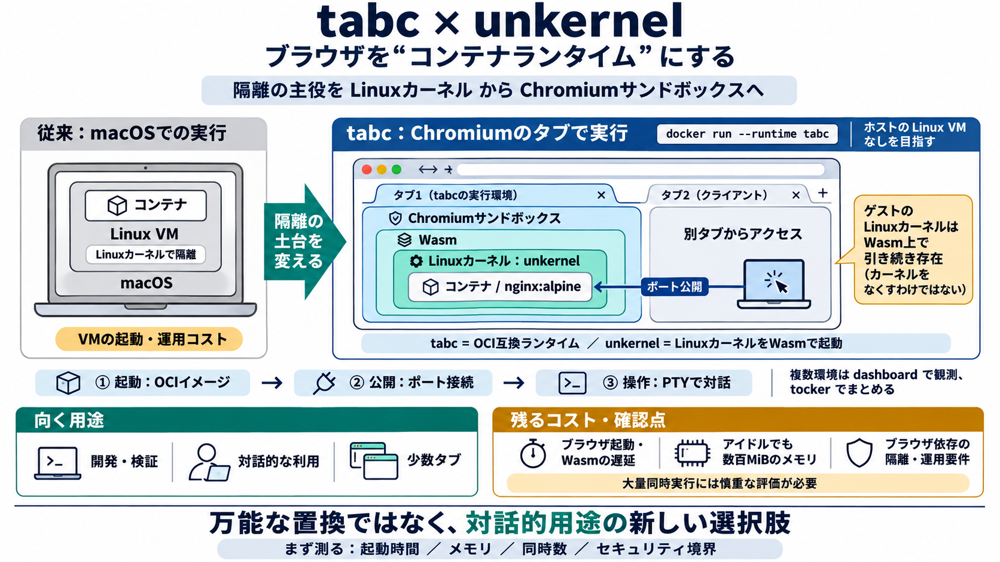

crun vs runc: Memory and Performance Benchmarks 2026
| Feature | runc | crun | --- | Language | Go | C | | Cold start | ~100ms | ~50ms | | Memory per container | ~10MB RSS |…

Dockerのような体験（OCI互換）を、ホストLinuxのカーネルに頼らず「Chromiumのタブ」とWasmで実現する狙いを整理します。
Dockerは本来、Linuxカーネル機能（名前空間やcgroupsなど）で隔離します。macOSではそれを補うためにLinux VMが必要になりがちです。
著者の発想は、最終的な隔離レイヤーをホストOSからブラウザのサンドボックスへ寄せることです。ホストにLinuxが不要になる方向を狙います。
tabcは「コンテナをChromiumのタブ（タブ内の環境）で動かす」OCI互換のコンテナランタイムです。既存イメージ運用を崩しにくいのがポイントです。
核心は、LinuxカーネルをWasmとしてブラウザ上で起動できる点です。これにより「ゲストとしてのLinux」を成立させます。
タブを開けば、その中でプロセス（例：nginx:alpine）を動かし、ポート公開して別タブからアクセスできます。
コンテナを開き、ポートを公開し、必要なら対話（PTY）で操作する、という“タブ中心の運用”を想定しています。
単発実行だけでなく、--dashboardでタブをペイン表示し、compose相当の軽量仕組みをtockerとして扱えると述べています。
従来はLinuxの名前空間やcgroups（＋seccomp等）が中心です。tabcは主にブラウザ（Chromium）のサンドボックスが隔離の責務を担う発想です。
過去の「ブラウザでLinuxを動かす」試みは、性能や不完全さが壁になったとされます。unkernelはカーネルをWasmとして起動し、コンテナ側は近い速度で成立させる設計で可能性を現実寄りにします。
ブラウザ起動が支配的になり、Wasmによる遅延やメモリオーバーヘッドも無視できません。アイドルで数百MiBの消費があると述べられています。
著者は、ネイティブ比の遅さやオーバーヘッドがあっても、対話的な用途では許容される場面があると結論づけています。ワークロード次第です。
強みはDocker互換（OCI）と、macOSでLinux VMなしを狙う現実的な設計です。注意点は、隔離がブラウザ依存になることと、長期運用要件（監査・障害時）を追加確認する必要があることです。
tabcはWasmとChromiumのサンドボックスを使い、コンテナの隔離レイヤーを組み替えることで、Linux VM必須という不合理を崩せる可能性を示します。
| Feature | runc | crun | --- | Language | Go | C | | Cold start | ~100ms | ~50ms | | Memory per container | ~10MB RSS |…
runc and crun share essentially the same threat model: they rely on Linux namespaces, cgroups, and seccomp for isolation…
bei lang laufenden Berech-nungen vernachlässigbar sein könnten. WebAssembly setzt jedoch die Grundideen der Con-taineris…
Container start time: about 50 percent faster than runc. Memory footprint: roughly one third. Dependencies: only glibc…
Typical OCI runtimes like runc limit system access using different capability models integrated into the Linux kernel li…